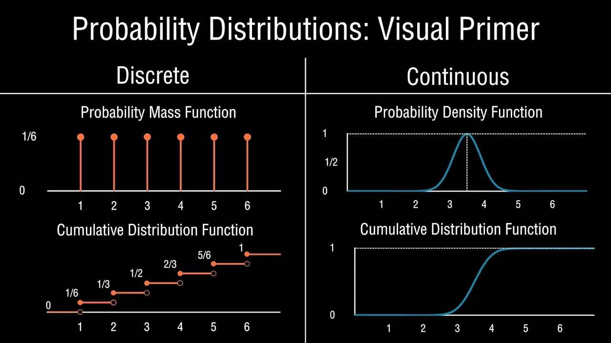
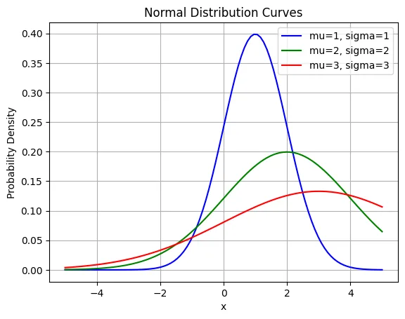
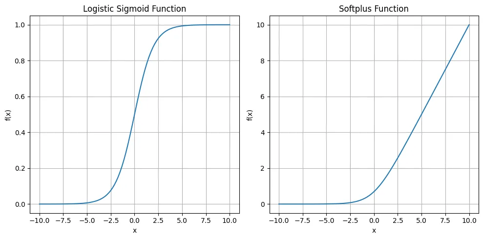
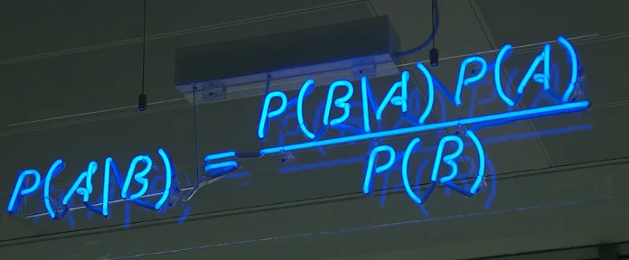

Probability Knowledge for Deep Learning
Contents
- 1 Overview
- 2 Knowledge
- 2.1 Discrete Variables and Probability Mass Function (PMF)
- 2.2 Continuous Variables and Probability Density Functions (PDF)
- 2.3 Marginal Probability
- 2.4 Conditional Probability
- 2.5 Chain Rule of Conditional Probability
- 2.6 Independence and Conditional Independence
- 2.7 Expectation, Variance and Covariance
- 2.8 Common Probability Distributions
- 2.9 Useful Properties of Common Functions
- 2.10 Bayes' Rule
- 3 Application Questions
Probability Knowledge Based on Deep Learning (2017, MIT) book.
1 Overview
Probability theory is a mathematical framework for representing uncertain statements. We use probability theory in two major ways in AI domain. First, the laws of probability tell us how AI systems should reason, so we design algorithms to compute or approximate various expressions derived using probability theory. Second, we can use probability and statistics to theoretically analyze the behavior of proposed AI systems.
2 Knowledge
2.1 Discrete Variables and Probability Mass Function (PMF)

A probability distribution over discrete variables can be described using a probability mass function (PMF). Descrete variable x follows distribution P(x): \mathrm{x}\sim P(x).
Joint probability distribution is a probability distribution over many variables: P(\mathrm{x}=x, \mathrm{y}=y), or P(x,y).
Properties of PMF:
- The domain of P must be the set of all possible states of \mathrm{x}.
- \forall x\in \mathrm{x}, 0\leq P(x) \leq 1.
- \sum_{x\in \mathrm{x}}P(x)=1.
Uniform distribution: P(\mathrm{x}=x_i)=\dfrac{1}{K}.
2.2 Continuous Variables and Probability Density Functions (PDF)
Probability density function (PDF) is used for describing the probability distributions of continuous random variables. The function p of a PDF must satisfy the following properties:
- The domain of p is the set of all possible states of \mathrm{x}.
- \forall x\in \mathrm{x}, p(x)\geq0. Note do not require p(x)\leq 1.
- \int p(x)dx=1.
PDF is not the probability, and PDF is not the same thing as PMF, PDF can be greater than 1. Discrete and continuous random variables are not defined the same way. For the continuous random variable, the necessary condition is \int p(x)dx=1. A PDF does not give the probability of a specific state directly, instead the probability of landing inside an infinitesimal region with volume \delta x is given by p(x)\delta x. The probability that x lies in the interval [a,b] is given by \int_{[a,b]}p(x)dx.
Uniform distribution u(x;a,b)=\dfrac{1}{b-a}, a and b are the endpoints of the interval. The ; notation means parameterized by. x is the argument of the function, a and b are parameters. x\sim U(a,b) denotes that x follows the uniform distrubtion.
2.3 Marginal Probability
The probability distribution over a subset of variables is known as the marginal probability distrubtion. E.g., discrete random variables \mathrm{x} and \mathrm{y}, P(\mathrm{x},\mathrm{y}) is known, the P(\mathrm{x}) can be computed with the sum rule: \forall x\in \mathrm{x}, P(\mathrm{x}=x)=\sum_{y}P(\mathrm{x}=x, \mathrm{y}=y). For continuous variables, need to use integration instead of summation: p(x)=\int p(x,y)dy.
2.4 Conditional Probability
Calculate the probability of some event, given that some other event has happend. This is the conditional probability. P(\mathrm{y}=y|\mathrm{x}=x), \mathrm{x}=x is the condition. It can be computed with the formula P(\mathrm{y}=y|\mathrm{x}=x)=\dfrac{P(\mathrm{y}=y,\mathrm{x}=x)}{P(\mathrm{x}=x)}.
The conditional probability is only defined when P(\mathrm{x}=x)>0. We cannot compute the conditional probability conditioned on an event that never happens.
2.5 Chain Rule of Conditional Probability
Any joint probability distribution over many random variables may be decomposed into conditional distributions over only one variable, this is known as the chain rule or product rule. P(\mathrm{x}^{(1)},\ldots,\mathrm{x}^{(n)})=P(\mathrm{x}^{(1)})\Pi_{i=2}^nP(\mathrm{x}^{(i)}|\mathrm{x}^{(1)},\ldots,\mathrm{x}^{(i-1)}).
Some examples:
P(a,b,c)=P(a|b,c)P(b,c);
P(b,c)=P(b|c)P(c);
P(a,b,c)=P(a|b,c)P(b|c)P(c).
2.6 Independence and Conditional Independence
x and y are independent (x\perp y) if: \forall x\in \mathrm{x}, y \in \mathrm{y}, p(\mathrm{x}=x, \mathrm{y}=y)=p(\mathrm{x}=x)p(\mathrm{y}=y).
Given a random variable z, x and y are conditionally independent (x\perp y|z) if:
\forall x\in \mathrm{x}, y\in \mathrm{y}, z\in \mathrm{z}, p(\mathrm{x}=x, \mathrm{y}=y, \mathrm{z}=z)=p(\mathrm{x}=x|\mathrm{z}=z)p(\mathrm{y}=y|\mathrm{z}=z)
2.7 Expectation, Variance and Covariance
Expectation
For discreate variables: \mathbb{E}_{\mathrm{x}\sim P}[f(x)]=\sum_{x}P(x)f(x).
For continous variables: \mathbb{E}_{\mathrm{x}\sim P}[f(x)]=\int{P(x)f(x)}dx.
Expectations are linear: \mathbb{E}_{\mathrm{x}}[\alpha f(x)+\beta g(x)]=\alpha \mathbb{E}_{\mathrm{x}}[f(x)] + \beta \mathbb{E}_{\mathrm{x}}[g(x)]
Variance
Var(f(x))=\mathbb{E}[(f(x)-\mathbb{E}[f(x)])^2]
When the variance is low, the values of f(x) cluster near their expected value. The square root of the variance is known as the standard deviation.
Covariance
Covariance gives sense of how much two values are linearly related to each other, as well as the scale of these variables:
Cov(f(x),g(y))=\mathbb{E}[(f(x)-\mathbb{E}[f(x)])(g(y)-\mathbb{E}[g(y)])]
High absolute values of the covariance mean the values change very much and are both far from their respective means at the same time. Positive sign means both variables tend to take on relatively high values simultaneously. Negative sign means one variable is getting high value and the other is getting low value at the same time, and vice versa.
Covariance and dependence are related:
- Independent variables have zero covariance. Non-zero covariance's variables are dependent.
- Independece is a stronger requirement than zero covariance. It is possible for two variable to be dependent but have zero covariance.
The covariance matrix of a random vector x\in \mathbb{R}^n is an n\times n matrix: Cov(\mathbf{x})_{i,j}=Cov(\mathbf{x}_i,\mathbf{x}_j) The diagnal elements of the covariance give the variance: Cov(\mathbf{x}_i,\mathbf{x}_i)=Var(\mathbf{x}_i).
2.8 Common Probability Distributions
Several useful probabiliy distributions in machine learning.
Bernoulli Distribution
Distribution over a single binary random variable. Properties:
- P(\mathbf{x}=1)=\phi, p(\mathbf{x}=0)=1-\phi
- P(\mathbf{x}=x)=\phi^x(1-\phi)^{1-x}
- \mathbb{E}_{\mathbf{x}}[\mathbf{x}]=\phi
- Var_\mathbf{x}(\mathbf{x})=\phi(1-\phi)
Multinoulli Distribution
Or categorical distribution, is a distribution over a signle discrete variable with k different states.
Gaussian Distribution
Or Normal distribution: \mathcal{N}(x;\mu,\sigma^2)=\sqrt{\dfrac{1}{2\pi \sigma^2}}\exp(-\dfrac{1}{2\sigma^2(x-\mu)^2})
- \mu gives the coordinate of the central peak, this is also the mean of the distribution: \mathbb{E}[\mathbf{x}]=\mu
- Standard deviation of the distribution: \sigma
- Variance: \sigma^2

Exponential and Laplace Distributions
Exponential distribution: p(x;\lambda)=\lambda 1_{x\geq 0} \exp(-\lambda x)
To all negative values of x, probability is zero.
Laplace distribution: Laplace(x;\mu,\gamma)=\dfrac{1}{2\gamma}\exp(-\dfrac{|x-\mu|}{\gamma})
Dirac Distribution and Empirical Distribution
Dirac distribution: p(x)=\delta (x-\mu)
Empirical distribution: \hat{p}(x)=\dfrac{1}{m}\sum_{i=1}^m\delta(x-x^{(i)})
2.9 Useful Properties of Common Functions
Logistic sigmoid
\sigma(x)=\dfrac{1}{1+\exp(-x)}
It is commonly used to produce the \phi parameter of a Bermoulli distribution. The sigmoid function saturates when its argument is very positive or negative, meaning the function becoms very flat and insensitive to small changes in its input.
Softplus
\zeta(x)=log(1+\exp(x))
The function can be useful for producing the \beta or \sigma parameter of a normal

Important properties
- \sigma(x)=\dfrac{\exp(x)}{\exp(x)+1}
- \dfrac{d}{dx}\sigma(x)=\sigma(x)(1-\sigma(x))
- 1-\sigma(x)=\sigma(-x)
- \log\sigma(x) = -\zeta(-x)
- \dfrac{d}{dx}\zeta(x)=\sigma (x)
- \forall x\in (0,1), \sigma^{-1}(x)=\log(\dfrac{x}{1-x})
- \forall x > 0, \zeta^{-1}(x)=\log (\exp(x)-1)
- \zeta(x)=\int_{-\infin}^{x}\sigma(y)dy
- \zeta (x) - \zeta(-x) = x
2.10 Bayes' Rule

P(x|y)=\dfrac{P(x)P(y|x)}{P(y)}
Calculate P(x|y) via P(y|x), note P(y)=\sum_xP(y|x)P(x). Bayes's rule is a way to figure out how likely something is to happen when have some old information.
3 Application Questions
Q1: There is a fair coin (one side heads, one side tails) and an unfair coin (both sides tails). You pick one at random, flip it 5 times, and observe that it comes up as tails all five times. What is the chance that you are flipping the unfair coin?\
Define U is the case flipping the unfair coin; F denotes flipping a fair coin. 5T denotes the event where we flip 5 heads in a row.
We know P(U) = P(F) = 0.5, need to solve the P(U|5T).
Q2: You and your friend are playing a game. The two of you will continue to toss a coin until the sequence HH or TH shows up. If HH shows up first, you win. If TH shows up first, your friend wins. What are the probabilities of each winer?
P(HH occurrs before TH) = P(HH in first two flips) = 1/4
P(TH occurrs before HH) = P(first is T) + P(first two is HT) = 1/2 + 1/4 = 3/4
Q3: 1/1000 people have a particular disease, and there is a test that is 98% correct if you have the disease. If you don’t have the disease, there is a 1% error rate. If someone tests positive, what are the odds they have the disease?
P(D) = 1/1000 is the probability of having the disease
P(H) = 1 - P(D) = 999/1000 is the probability of health
P(P|D) = 98% is the probability of testing positive if having the disease
P(P|H) = 1% is the probability of testing positive if do not have the disease
Need to solve P(D|P)
So, the probability that someone has the disease given that they tested positive is approximately 0.0894 or 8.94%.